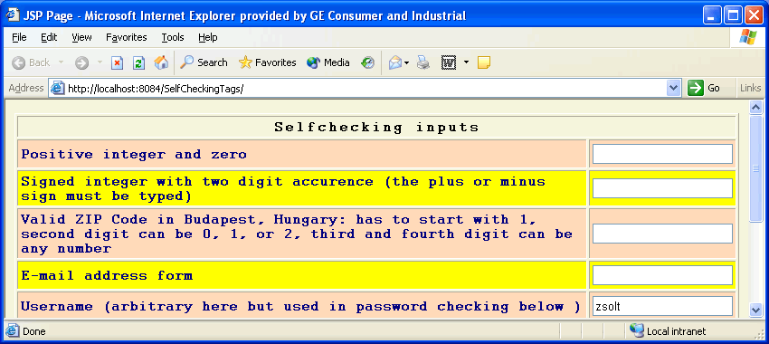
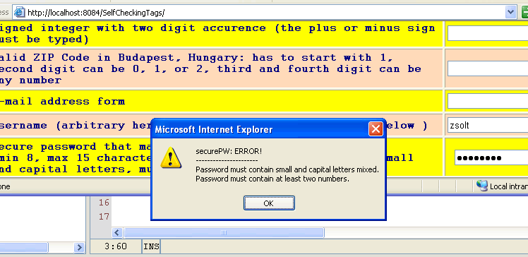

このチュートリアルでは、拡張されたいくつかの html
<input type="text">要素を構築します。これらの要素には自己チェックのプロパティーがあります。つまり、どのユーザー入力しか受け入れられないかが事前に定義されています。
これは、Java Server Pages テクノロジのカスタムタグライブラリを使用して実行できます。
カスタムタグライブラリは、基本的な html タグをプログラマが定義した要素で拡張し、この方法によって html に新しい機能を追加します。その観点から、Java 開発者は新しいタグを考案しました。このタグは、プログラミングの知識をまったく (または、一部の基本的な知識しか) 必要とせず、Web デザイナや html コーダーがだれでも使用できます。そのため、Java に精通していない Web プログラマもこれらのテクノロジの利点を享受できます。
ここでは、NetBeans IDE 4.0 を使用して新しい html タグを開発します。この驚くべき環境によって、JSP カスタムタグライブラリをすばやく、かつ非常に簡単な方法で開発するために必要なすべてのものが提供されます。
次の主な手順について詳しく説明します。
NetBeans を起動し、メインメニューで「ファイル」>「新規プロジェクト」を選択します。カテゴリで「Web」を選択し、プロジェクトは「Web アプリケーション」にします。「次へ」をクリックします。次のページで、プロジェクト名として SelfcheckingTags を入力し、IDE によってプロジェクトフォルダが作成されるようにする目的のフォルダを参照します。「完了」をクリックします。
IDE で、プロジェクトフォルダとその内容を確認できます。Ctrl+1 キーを押すと「プロジェクト」ウィンドウが表示され、Ctrl+2 キーを押すと「ファイル」ウィンドウが表示されます。IDE によって、デフォルトの index.jsp ファイルと常に必要となる WEB-INF フォルダが自動的に作成されています。
最初に、タグライブラリ記述子を作成する必要があります。これは、開発しているタグに関する情報を含む、XML 構文を持つファイルです。タグを定義するための名前、属性、これらの値のデータ型などを記述します。IDE の「プロジェクト」ウィンドウでプロジェクトの名前を右クリックし、「新規」>「ファイル/フォルダ」を選択してから、「Web」を選択し、ファイルの種類として「タグライブラリ記述子」を選択します。「次へ」をクリックし、次に表示される画面で、ファイル名として selfcheckers を、その下の接頭辞として sfchk を入力します。ほかの入力はすべてそのままにします。
それにより、IDE によって selfcheckers.tld という名前の記述子ファイルが WEB_INF/tlds フォルダ内に自動的に作成されます。この記述子ファイルは次のような内容になります。
今はこのコードを入力しないでください。この記述子ファイルの内容は、あとで NetBeans IDE の使いやすいメカニズムを使用して作成します。
<tag>
<name>xinput</name>
<tag-class>com.zsoltkiss.web.customtags.selfcheckers.XInput</tag-class>
<body-content>empty</body-content>
<attribute>
<name>id</name>
<required>true</required>
<type>java.lang.String</type>
</attribute>
<attribute>
<name>pattern</name>
<required>true</required>
<rtexprvalue>true</rtexprvalue>
<type>java.lang.String</type>
</attribute>
<attribute>
<name>allowedEmpty</name>
<rtexprvalue>true</rtexprvalue>
<type>boolean</type>
</attribute>
<attribute>
<name>message</name>
<rtexprvalue>true</rtexprvalue>
<type>java.lang.String</type>
</attribute>
</tag>
<tag>
<name>xiudv</name>
<tag-class>com.zsoltkiss.web.customtags.selfcheckers.XInputUDV</tag-class>
<body-content>empty</body-content>
<attribute>
<name>id</name>
<required>true</required>
<type>java.lang.String</type>
</attribute>
<attribute>
<name>maxlength</name>
<rtexprvalue>true</rtexprvalue>
<type>int</type>
</attribute>
<attribute>
<name>method</name>
<required>true</required>
<rtexprvalue>true</rtexprvalue>
<type>java.lang.String</type>
</attribute>
</tag>
ここで、タグ記述子について少し調べてみましょう。これらのエントリによって、Web 開発者が次のように使用できる 2 つのタグが定義されます。
<sfchk:xinput id="" pattern="" allowedEmpty="" message="" /> <sfchk:xiudv id="" maxlength="15" validator="" />この説明は次のとおりです。sfchk は、タグライブラリを識別する接頭辞です。あとで、これらに関連しない別のタグを作成する可能性がある場合は、それらのタグを独自の接頭辞を持つ別のフォルダに分離することが現実的です。
pattern="/^[0-9]{1,}$/" を指定した場合、この規則は、入力ボックスに正の整数と 0 値しか入力できないことを示します。(正規表現に精通していない場合は、JDK の Javadoc か、Java または JavaScript の書籍を参照してください。)
これでタグライブラリ記述子が作成されたため、次に実際の Java コードをいくつか記述します。続いて、タグハンドラクラスについて説明します。
タグハンドラクラスの仕事は、Web コンテナが、ページのソースコードの解析プロセス中に非標準の html タグを検出したときに何を行うかを解釈することです。一意のタグごとに 1 つのタグハンドラを作成する必要があります。このためには、プロジェクトの名前を右クリックし、「新規」>「ファイル/フォルダ」を選択してから、「Web」を選択し、ファイルの種類として「タグハンドラ」を選択します。「次へ」をクリックします。
次に表示されるページで、クラス名として XInput を、パッケージ名として com.zsoltkiss.web.customtags.selfcheckers を入力し (または、ユーザー独自のパッケージ構造を使用し)、「SimpleTagSupport」ラジオボタンはオンのままにします。「次へ」をクリックします。次のページで、「タグライブラリ記述子に対応するタグを追加」をオンのままにし、「参照」を使用して tld ファイルを IDE に示します。タグ名をすべて小文字 (大文字はなし) の xinput に変更し、「本体の内容」を「空」として設定して、「新規」でタグ属性を次のように追加します。
前の手順に基づいて、次の属性を持つ xiudv という名前のタグのための、XInputUDV という名前の 2 番目のタグハンドラクラスを作成します。
XInput.java の doTag() メソッドを検索すると、次の行が見つかります。
if(f != null) f.invoke(out);
out.print("<input type=\"text\" name=\"" + id + "\" id=\"" + id + "\" onblur=\"validate(this," + pattern +",");
if(allowedEmpty) {
out.print("true,");
}else {
out.print("false,");
}
if(message != null) {
out.print("'" + message + "'");
}else {
out.print("''");
}
out.print(");\">\n");
同様に、XInputUDV.java ファイルの前と同じ場所から、次のコードフラグメントを追加します。
out.print("<input type=\"password\" name=\"" + id + "\" id=\"" + id + "\" ");
if(maxlength > 0) {
out.print("maxlength=\"" + maxlength + "\" ");
}
out.print("onblur=\"" + method + "(this);\">\n");
これらのコードフラグメントは、パーサーが sfchk:xinput または sfchk:xiudv タグを検出した場所で、html ソースへの単純な出力を実行します。実際のところ、これらのタグハンドラによって開発者が作業から解放されます。開発者は、ユーザー入力チェックの同じメソッドやトリックを何回も繰り返し入力する必要がありません。
この時点で Java は完成です。残された作業は index.jsp の変更です。では、新しいタグを動作させてみましょう。index.jsp の <body></body> の間に、次のコードフラグメントを追加します。
<table border="1" cellpadding="3">
<form name="form1" onsubmit="return CheckForm()">
<th colspan="2" bgcolor="#f5f5dc" style="font-family:Courier;letter-spacing:2px;">Selfchecking inputs</th>
<tr bgcolor="#ffdab9">
<td style="font-family:Courier;color:navy;font-weight:bold;">Positive integer and zero</td>
<td align=right>
<sfchk:xinput id="numOnly" pattern="/^[0-9]{1,}$/" allowedEmpty="false" message="You are allowed only positive integer and and zero." />
</td>
</tr>
<tr bgcolor="#ffff00">
<td style="font-family:Courier;color:navy;font-weight:bold;">Signed integer with two digit accurence (the plus or minus sign must be typed)</td>
<td td align=right>
<sfchk:xinput id="digits" pattern="/^(\+|\-)\d{1,}\.\d{2,2}$/" allowedEmpty="true" message="Only signed float with two digit followed the decimal point allowed." />
</td>
</tr>
<tr bgcolor="#ffdab9">
<td style="font-family:Courier;color:navy;font-weight:bold;">Valid ZIP Code in Budapest, Hungary: has to start with 1, second digit can be 0, 1, or 2, third and fourth digit can be any number</td>
<td td align=right>
<sfchk:xinput id="zipOnly" pattern="/^1(0|1|2)\d\d$/" allowedEmpty="true" message="Enter only valid ZIP code in Budapest, Hungary" />
</td>
</tr>
<tr bgcolor="#ffff00">
<td td style="font-family:Courier;color:navy;font-weight:bold;">E-mail address form</td>
<td>
<sfchk:xinput id="mailOnly" pattern="/.{1,}@.{1,}\.\D{2,3}$/" allowedEmpty="true" message="Enter only e-mail address form." />
</td>
</tr>
<tr bgcolor="#ffdab9">
<td style="font-family:Courier;color:navy;font-weight:bold;">Username (arbitrary here but used in password checking below )</td>
<td td align=right>
<input type="text" readonly id="username" value="zsolt">
</td>
</tr>
<tr bgcolor="#ffff00">
<td style="font-family:Courier;color:navy;font-weight:bold;">
Secure password that matches a policy<br>
(min 8, max 15 characters, at least two numbers, mixed small and capital letters, mustn't contain username)
</td>
<td td align=right>
<sfchk:xiudv id="securePW" maxlength="15" method="isSecure" />
</td>
</tr>
</table><br>
<span style="font-family:Courier;color:navy;font-weight:bold;">
These form inputs are extends the basic html text inputs providing a "self checking method" when user types
te input. Permitted inputs are ruled by a JSP tag library where programmer can define his/her own often used
inputs and the rules (javascript checker methods) that do checking. The page must include these javascript
checker methods as an outer .js file.
</span>
これらの行によって、新しいタグを使用した、単純な html フォームが構築されます。xinput 要素と xiudv 要素で使用されている構文を調べると、これらの要素をパラメータ化する方法の例を見つけることができます。<%@taglib prefix="sfchk" uri="/WEB-INF/tlds/selfcheckers"%>
アプリケーションを実行する前に行う最後の作業は、Javascript checker メソッドの追加です。これを行わないと、新しいタグは復活しません。Javascript まで記述する必要があるのなら、これまでの作業全体にどういう意味があったのかという疑問を持つかもしれません。この Javascript は 1 回しか記述する必要がないことを忘れないでください。一連の Javascript checker メソッドを作成し、それを外側の .js ファイルに追加すれば、それを今開発した拡張された入力要素とともにいつでも使用できます。これがその意味です。では、Javascript を見てみましょう。
<script type="text/javascript">
function validate(obj,pattern,empty,message) {
var input = obj.value;
if(input.search(pattern) == -1) {
alert(obj.name + ":\n" + message);
if(!empty) {
obj.select();
obj.focus();
}else {
obj.value = "";
}
return false;
}
return true;
}
function isSecure(obj) {
var pwOK = true;
var errorMessage = obj.name + ": ERROR!\n----------------------";
var input = new String(obj.value);
//alert(input.length);
var minlength = 8;
//ユーザー名を含めてはいけません
var startnum = /^\d/; //数字で始まってはいけません
var endnum = /.{1,}\d$/; //数字で終わってはいけません
var specialChars=/(@|-|_|,|\.)/; //これらの特殊文字は許可されません (コードを動作させるには文字の論理和をとる必要がある)('\.' means the dot)
var space=/\s/; //空白を含めてはいけません
var numbers=/\d/g; //少なくとも 2 つの数字を含める必要があります
var letters=/[a-z]/; //(大文字ではなく) 小文字を含める必要があります
var capitalLetters=/[A-Z]/; //大文字を含める必要があります
if(input.length < minlength) {
pwOK = false;
errorMessage += "\nMin. length must be at least " + minlength + " character.";
}
if(input.indexOf(document.getElementById("username").value) != -1) {
pwOK = false;
errorMessage += "\nThe password must NOT contain the username.";
}
if(input.search(startnum) != -1) {
pwOK = false;
errorMessage += "\nPassword must NOT start with a number.";
}
if(input.search(endnum) != -1) {
pwOK = false;
errorMessage += "\nPassword must NOT end with a number.";
}
if(input.search(specialChars) != -1) {
pwOK = false;
errorMessage += "\nPassword must NOT contain special chars.";
}
if(input.search(space) != -1) {
pwOK = false;
errorMessage += "\nPassword must NOT contain spaces.";
}
if(input.search(letters) == -1) {
pwOK = false;
errorMessage += "\nPassword must contain small and capital letters mixed.";
}
if(input.search(capitalLetters) == -1) {
pwOK = false;
errorMessage += "\nPassword must contain small and capital letters mixed.";
}
var numHits = input.match(numbers);
if(numHits == null || numHits.length == null || numHits.length < 2) {
pwOK = false;
errorMessage += "\nPassword must contain at least two numbers.";
}
if(!pwOK) {
alert(errorMessage);
}
return pwOK;
}//関数の終了
</script>
このスクリプトブロックを index.jsp の <head></head> 要素間に追加します。これで、コードが正しく動作するかどうかを試す準備ができました。
IDE で構築と実行を行うには、まず Ctrl+F11 キーを押して「生成物を削除して構築」を実行します。正常に完了した場合は、F6 キーでプロジェクトを実行できます。これらの機能は、メニューから確実に起動できます。プロジェクトを実行した場合は、IDE に組み込みの Tomcat が index.jsp をレンダリングし、次のように表示されます。

入力ボックスにテキストを入力すると、xinput タグによってただちにチェックが実行されるため、入力が正しいかどうかがわかります。タグの emptyAllowed 属性の設定を true に再パラメータ化した場合は、「カーソルが戻され、問題がなくなるまで入力する」 という副作用に煩わされることがなくなります。
下の図では、セキュリティーポリシーに一致しないパスワードを入力しようとしたときに表示された Javascript checker の警告を確認できます。
